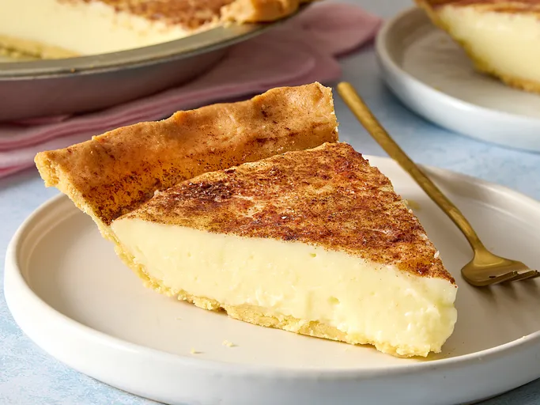

Home
Sugar Cream Pie

Description
This is a delicious sugar cream pie which cooks the filling prior to being put in a baked shell. Real butter and
half and half are must-haves for this to be at its best. People always ask me for the recipe!
Ingredients
- 1 (9-inch) pie crust, baked
- 4 tablespoons cornstarch
- ¾ cup white sugar
- 4 tablespoons butter, melted
- 2 ¼ cups half-and-half cream
- 1 teaspoon vanilla extract
- 2 tablespoons butter, melted
- ½ teaspoon ground cinnamon
Steps
- Gather all ingredients
- Mix cornstarch and sugar
- Preheat oven broiler to high
- Put under broiler until butter bubbles
- Refrigerate pie for at least 1 hour before serving